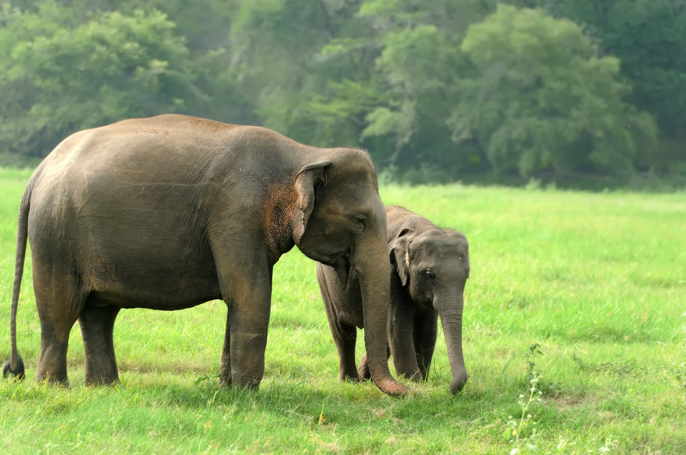
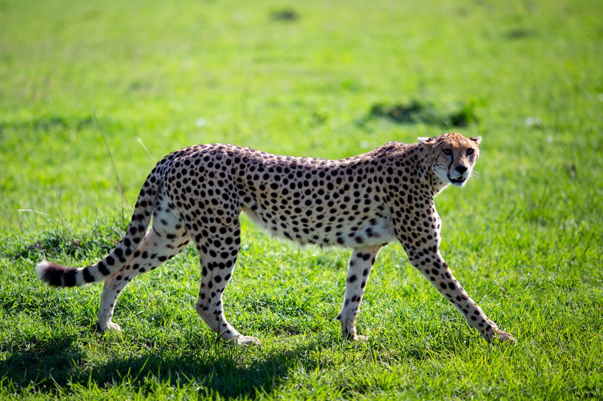
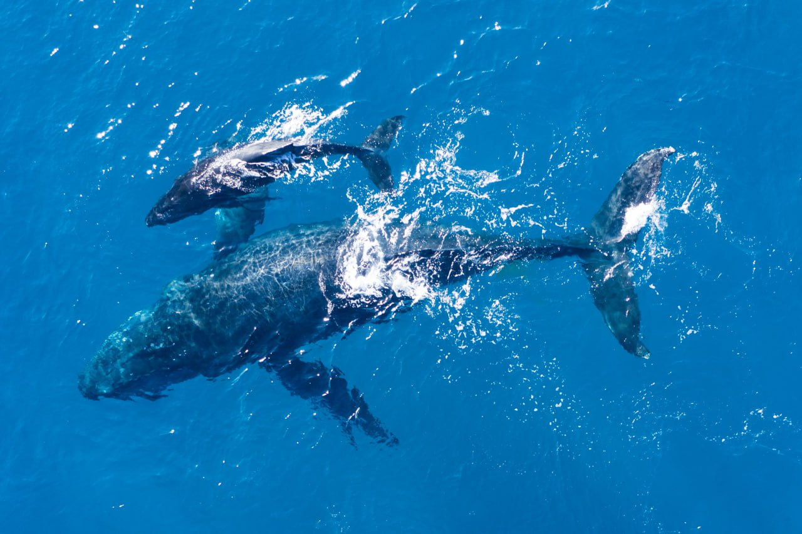
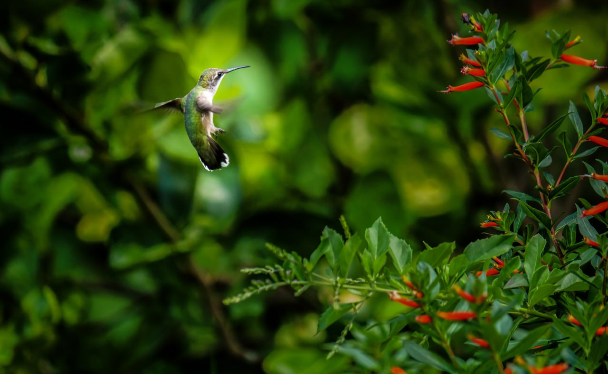

Wildlife Streaming in Sri Lanka
Despite its modest size, Sri Lanka is one of the world's top five biodiversity hotspots and has one of the highest rates of biological endemism, whether in plants or animals.
The majority of wildlife enthusiasts are interested in Asian elephants, sloth bears, leopards, sambar, and wild buffaloes out of the 91 species of animals that may be found in Sri Lanka. The Red Slender Loris,
Toque Macaque, and Purple-faced Langur are the rarest mammals in Sri Lanka, and according to the IUCN, they are all in danger of extinction because of habitat degradation.
In the meantime, numerous families of cetaceans, such as the powerful blue whales, sperm whales, and playful dolphins, reside in the seas surrounding Sri Lanka.
Wildlife to See in Sri Lanka

Elephant
The Asian elephant is the most sought-after animal by tourists in Sri Lanka.
Although there are many elephant orphanages where you may ride and feed the animals,
seeing elephants in the wild is a much better experience,and you can do it without worrying about
whether or not they are being treated poorly.
Best places to see elephants in Sri Lanka
For the largest herds and best sightings, head to either Udawalawe or Minneriya National Park.
Best time to see elephants in Sri Lanka
Whereas Udawalawe guarantees elephant sightings year-round, the famous elephant gathering in
Minneriya occurs during the months of August to September.

Leopard
Leopards in Sri Lanka are more relaxed than they are everywhere in the globe and are frequently spotted relaxing
in the trees because
there are no lions or tigers to endanger their position. In comparison to leopards in Africa or India, where
they must compete with other carnivores for food, they are also significantly larger.
Best places to see leopards in Sri Lanka
If leopards are what you are after then head to Yala National park, the area with the highest leopard density.
Best time to see leopards in Sri Lanka
Visit Yala in the dry season from May to October, when vegetation is less thick, and it will
be much easier to spot this beautiful big cat.

Blue Whale
The blue whale, the king of the oceans and the largest animal on Earth, is a rare treat for nature aficionados,
and Sri Lanka is the only place in the world where they are more likely to be observed.
Schedule your trip during the whale-viewing season to experience the jaw-dropping shock of seeing these majestic creatures in person.
Best places to see blue whales in Sri Lanka
Northeast coast near Trincomalee or in the southern waters by Mirissa.
Best time to see blue whales in Sri Lanka
Between the months of June and October whale watching is best off Trincomalee, then from November to April
the season continues on the south coast in Mirissa.

Birds
Travellers will be delighted by the number of endemic birds that can be
found in Sri Lanka. Sri Lanka has its very own, unique species of magpies,pigeons and parrots
and plenty of places to spot them all.
Best places to see birds in Sri Lanka
All of the national parks in the country will have a selection of birds on offer but those considered to be the best
for bird-watching are Sinharaja, Bundala, Yala and Udawalawe national parks and the Horton Plains.
Best time to see birds in Sri Lanka
Keen birders should head to Sri Lanka between November and April, when there's plenty of migrant species to look out for but less rainfall.